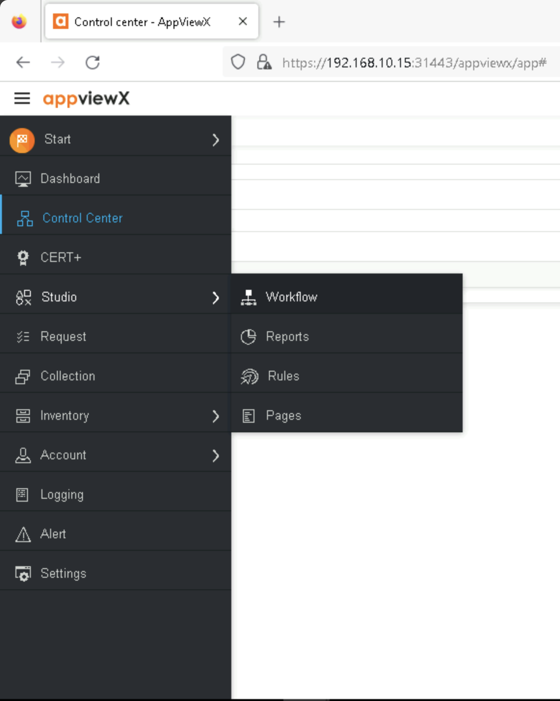
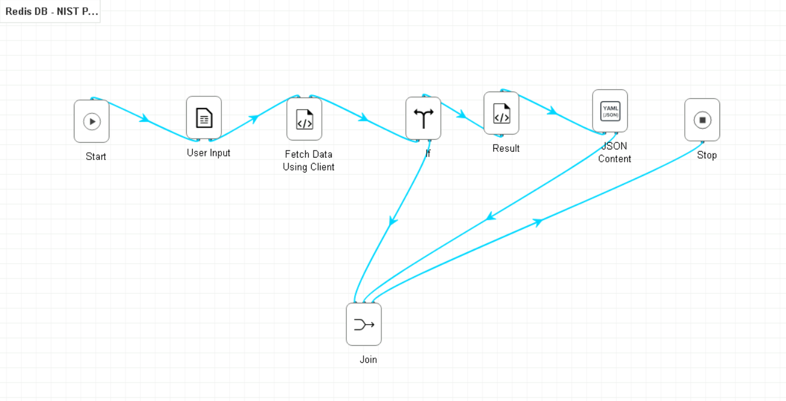

AppViewX for Exported Session Key Governance#
This build uses the AppViewX product to manage access to the TLS session keys. While the AppViewX product provides the API for retrieving TLS session keys, in this example implementation, TLS session keys are delivered to and stored in a Redis dictionary-type database in the FastKey JSON file protocol using the TLS session’s Client Random ID as the dictionary key. Since the TLS session Client Random ID is not guaranteed to be unique, the Redis database allows multiple entries per dictionary key, and decryptors would attempt decryption using any available key for that specific Client Random ID.
Instantiation of the AppViewX Virtual Appliances#
To support this use case, two AppViewX products are deployed as virtual appliance machines. The main appviewX virtual appliance was created in vSphere from the vendor-supplied virtual appliance (OVF) file. It is provisioned with 8 vCPUs, 32 GB of memory, 250 GB of storage, and two network interfaces. This appliance is leveraged by the other use cases discussed later in the document.
The second virtual appliance, the Software Security Module, was created in vSphere from a separate OVF file supplied by the vendor. It is provisioned with 1 vCPU, 2 GB of memory, 40 GB of storage, and a single network interface. This appliance is only used for the generation, storage, distribution, and retrieval of the bounded-lifetime Diffie-Hellman key pairs that are used by the TLS servers.
AppViewX Appliance Network Configuration#
Interface |
Network |
IP Address |
Purpose |
|---|---|---|---|
1 |
MANAGEMENT |
192.168.10.15 |
Access to the web-based management console and connectivity to other products. |
2 |
HSMNET |
N/A |
Provides connectivity to the hardware security module. |
AppViewX Software Security Module Appliance Network Configuration#
Interface |
Network |
IP Address |
Purpose |
|---|---|---|---|
1 |
MANAGEMENT |
192.168.10.109 |
Connectivity to other products. |
Additional Modules#
The primary appliance was provisioned with the following modules:
Plugin Name |
Plugin Link |
|---|---|
AppViewX_2020.3.FP11.tar.gz |
|
scripts_2020.3.FP11_27Jul2023.tar.gz |
|
appviewx_addons_2020.3.FP11.tar.gz |
|
AppViewX_2020.3.0_Latest_Plugins_01Sep2023_114616.tar.gz |
https://release.appviewx.com/downLoadPluginAll?version=AppViewX_2020.3.1 |
N/A |
https://release.appviewx.com/downLoadAddons?version=AppViewX_2020.3.1 |
Configuration Procedure#
This section describes the configuration of AppViewX to manage access to the Redis dictionary-type database for key providers, (namely the Mira ETO passive decryptor, and the NFR agent installed on the TLSv1.3 configured servers), and key consumers (the decryptors). Authorized via application tokens, the decryptors make calls to the AppViewX RESTAPI, which are forwarded to the Redis database, and the keys matching the requested Client Random ID are returned for decryption.
The figure below shows how to access the workflow library.
{kind=link}

Access to AppViewX Workflows#
The figure below shows shows the contents of the workflow for the Exported Key workflow.
{kind=link}

Exported Key Workflow#
Additional Configuration Files#
Relevant Configuration Files |
|---|
workflows/Redis DB - NIST POC/Result.py |
workflows/Redis DB - NIST POC/JSON Content.yaml |
workflows/Redis DB - NIST POC/Fetch Data Using Client Random.py |
These files were created as part of the creation of the workflow for this build in AppViewX. This workflow serves the purpose of managing access to the Redis database containing keys indexed by their Client Random ID.